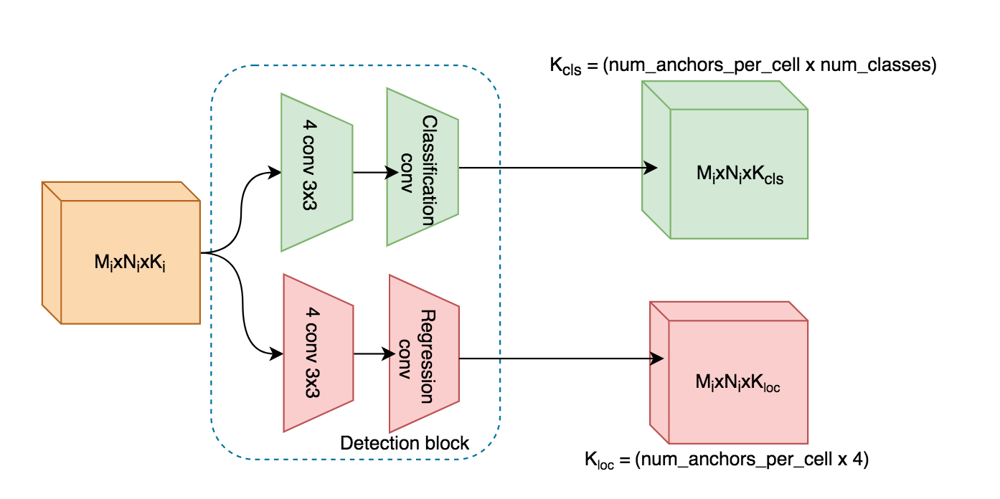

How to build a single-stage model for object detection and face detection
In this part, I'm going to present how to build a single-stage object detector like SSD, SFD and so on.
Contents
- The general architecture of a single-stage object detector
- Building SSD7: The simple example of object detector
- Building S3FD: Single scale-invariant face detector
- FaceNet: A single-stage face detector using ResNet backbone
1. The general architecture of a single-stage object detector
The general architecture for a single-state (single-shot or one-stage or one-shot so on) object detector usually consists of:
1.1. The feature extractor
- First, we build a base network as a feature extractor.
- Second, we extract some layers in the feature extractor as the detection layers.
- Detection layer
i(of size (MixNixKi)) is a set ofKifeature maps of size (MixNi).Kican be considered as the number of channels of this layer. - The detection layer
idivides the image intoMixNispatially equal cell. Each cell may have 1 or more than 1 anchors. For more details about encoding, please visit How to encoding ground truth boxes and labels to anchors.
In the example above, let say, we extract 3 detection layers from layers i, j, k. Later, we
pass these layers to detection blocks to get the detection of total_num_anchors generated by
our model.
K = num_anchors_per_cells
total_num_anchors = K[i]*(Mi*Ni) + K[j]*(Mj*Nj) + K[k]*(Mk*Nk)
1.2. The detection block
-
The outputs of detection blocks will tell us whether a anchor belongs to a certain object class or not. If yes, then where is the detected bounding box by computing the offsets of coordinates of the detected boxes with this anchor.
-
The detection block can be divided into 2 sub-blocks: classification block, and regression block.
-
The detection block at each layer take the corresponding detection layer as the input and return the set of
loc_detsandcls_dets.-
cls_detsis the set of detection classification scores for each class - the probability that the anchor belongs to the class (outputs of classification block). -
loc_detsis the set of detection locations of bounding boxes - the offset of coordinates of bounding boxes to their respective anchors (outputs of regression block).
-
Classification block and regression block can consist of 1 direct conv layer or a stack of several conv layers.
SSD7: The simple example of object detector
SSD7 consists of:
* Feature extractor is a stack of 8 conv layers. After each conv layer, the size of output is
reduced by two using MaxPooling2D.
-
Detection blocks Each detection block for each layer includes two sub-blocks: regression block and classification block. However, each sub-block is just 1 conv layer for simplicity as below:
-
We define the SSD7 including its
self.extractor,self.detection_blocks. The below code is simplified to make it succide.
class DetectionBlock(nn.Module):
def __init__(self):
self.reg_conv
self.cls_conv
def forward(self, input):
...
return loc_dets, cls_dets
class SSD7(nn.Module):
def __init__(self):
self.extractor = ... # conv1 -> conv8
self.det_blocks = [DetectionBlock()] * num_detection_layers
def forward(self, input):
# perform feature extraction
detection_layers = self.extractor(input)
# perform detections
final_loc_dets, final_cls_dets = [], []
for i, detection_layer in enumerate(detection_layers):
loc_dets, cls_dets = self.det_blocks[i](detection_layers[i])
final_loc_dets.append(loc_dets)
final_cls_dets.append(cls_dets)
return final_loc_dets, final_cls_dets
The details of implementation can be found at file models/ssd7.py.
FaceNet: A single-stage face detector using ResNet backbone.
-
Feature extractor
-
ResNet backbone: The last conv layer of
conv2,conv3,conv4,conv5blocks in ResNet are selected as the detection layers. -
Extra conv blocks Two more
conv6,conv7blocks are added to ResNet backbone, each block includes 2 conv3x3. The last conv layers ofconv6andconv7are selected as detection layers.
-
-
Detection blocks
- The classification branch consists of 4
convlayers of3x3before the classification layer. - The regression branch consists of 4
convlayers of3x3before the regression layer.
- The classification branch consists of 4
